本篇教程将介绍如何用Aegisub读取一首歌, 将歌词划分成音节并添加时间码。
这篇教程基本是为零起点的人准备的。
开始之前我们要准备好一些东西:
这里使用一首日文歌作为例子。但是不得不提一下，Aegisub的大多数高级歌词功能都是为日语或者其它语言设计的。这些语言最终可以被体现为西文字母(罗马音、汉语拼音)。具体用法见视频教程。
首先，我们创建一个新文件。如果你是刚刚启动Aegisub，那么直接在当前窗口编辑即可。
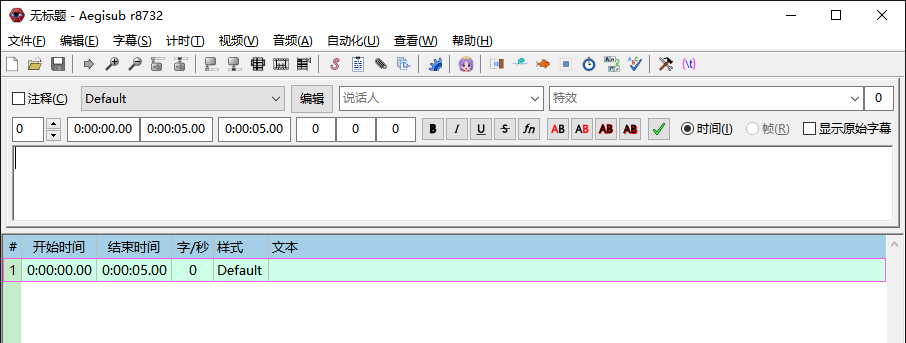
现在让我们打开歌曲音频。点击 音频 菜单中的 打开音频文件 …
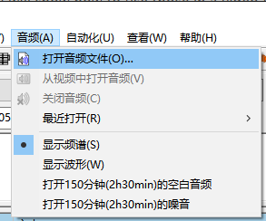
…然后选择歌曲音频文件。
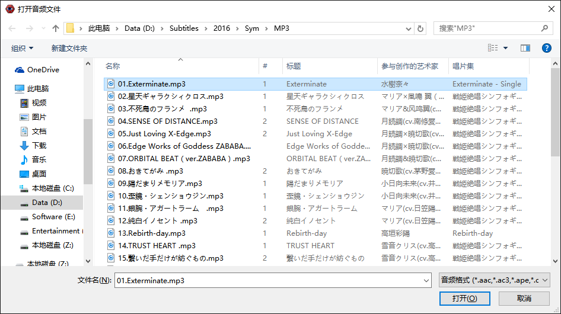
Aegisub会花费一点时间来载入音频。
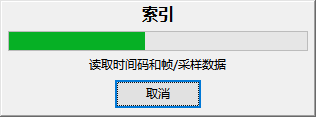
当载入完成，你应当会在Aegisub窗口上半部分看到波形模式下的音频显示。如果你之前用过Aegisub，它看起来可能有点不同，建议跟着教程图的设置走，后面可以更轻松。
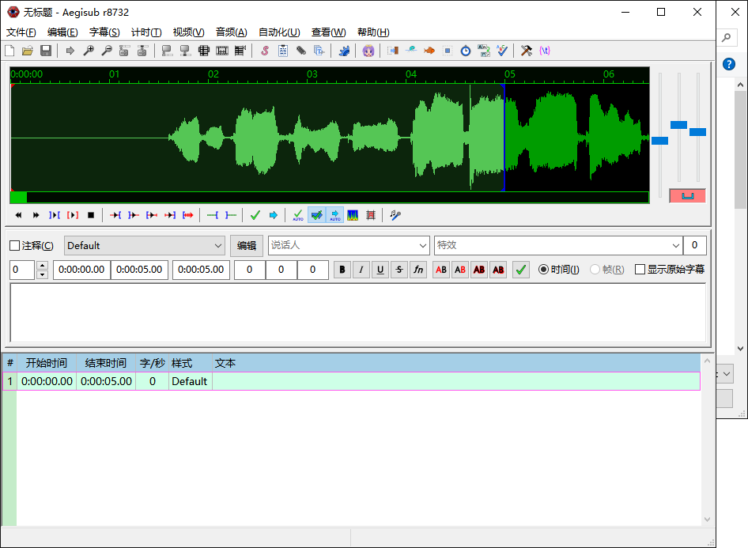
我们一会再看如何用音频打轴，先把歌词和载入的歌曲对应上。
从视频中打开音频: 你可以在音频文件选择窗口中选中含有音轨的视频文件，这样不会打开音频，而是打开视频文件的音轨。
WAV文件秒读: 如果你有未压缩的 WAV 格式音频文件，Aegisub可以秒读它到内存中。这会节省大量时间，但是相对的，也需要多占用一些硬盘空间，或者需要事先转换成WAV格式。(所以有现成的WAV就用WAV，没有就算啦，只对未压缩PCM有效，MP3之类的文件仍然要花时间预读取)
现在，输入歌词，我们开始敲键盘…
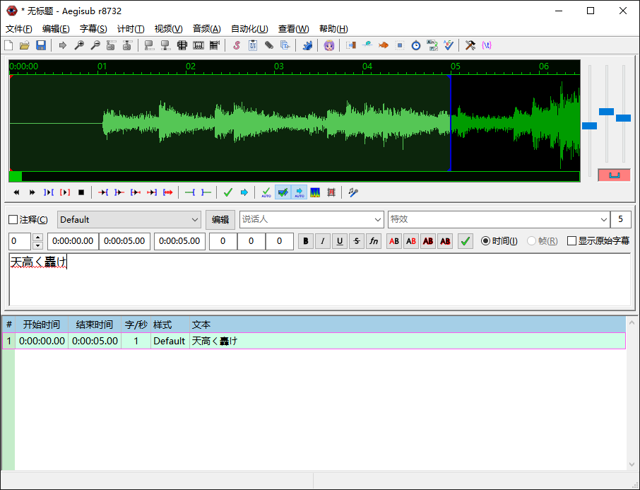
但是不要这样做! 如果你之前已经拥有了分行纯文本格式的歌词，能避免很多麻烦，因为你可以直接复制粘贴到Aegisub。(你也可以从信赖的歌词网站直接复制歌词粘贴。)
我拥有分行的歌词文本文件，我打开它，选中文本并复制。
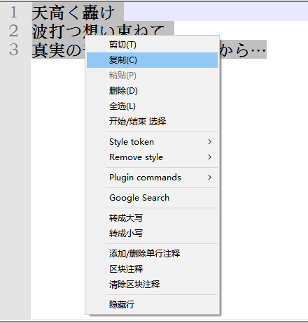
现在事情开始变得有点复杂了，但是不要慌，其实并不难 :-)
有两种方式可以把刚复制的文本粘贴进 Aegisub:在字幕栏，或者在字幕编辑框。当你粘贴到字幕栏的时候，你在文件中创建了新的字幕行。当你粘贴到字幕编辑框，只会作用当前选中这行。
我们要确认粘贴到了字幕栏，所以单击字幕栏然后在菜单中依次点击编辑、粘贴行(在字幕栏右键单击粘贴也可)。
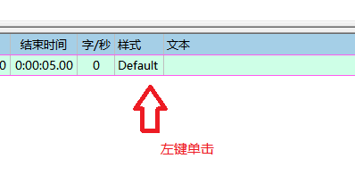
现在我们把歌词粘贴进来
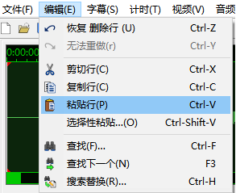
歌词会立刻以逐行的形式出现在字幕栏中。注意这时行的开始结束时间都是0。
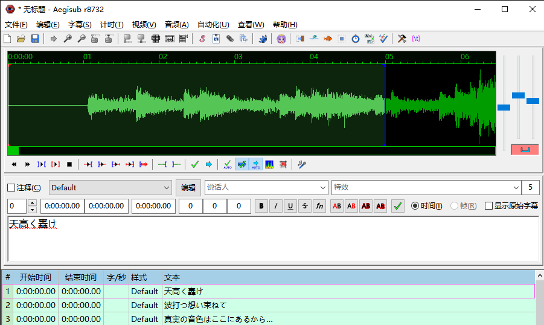
现在存个盘也许是个好主意。
记住 Aegisub 每隔几分钟会自动保存文件，甚至你还没给文件命名，所以即使出了什么情况，你也很少有机会丢失工作文件。
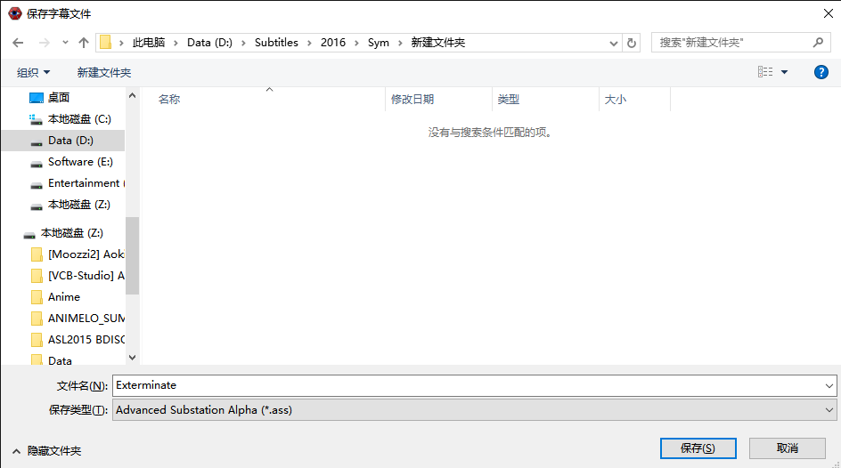
现在我们已经准备好给每行歌词打时间轴了。
本部分参见 制作时间轴
准确的整行时间是做准卡拉OK时间的基础
准备工作，使用频谱模式，打开卡拉OK模式 为什么使用频谱模式，在下文会有说明
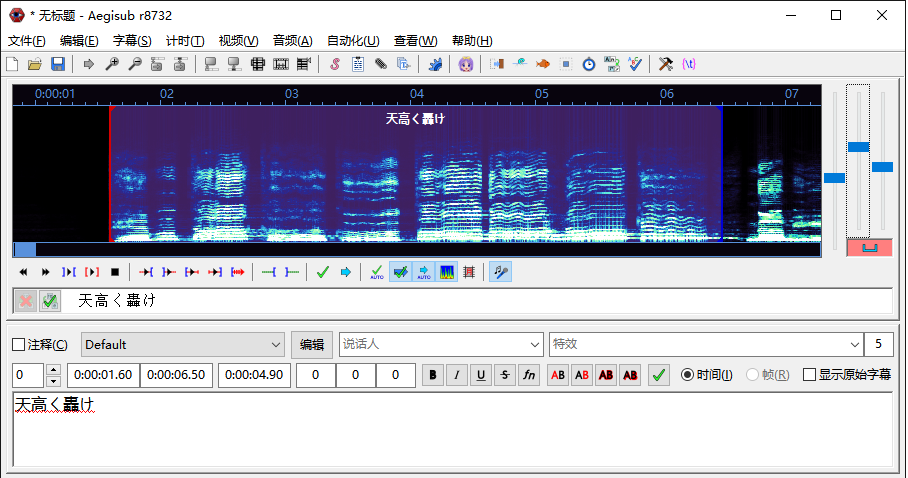
划分音节，在字符间点击鼠标左键，音频图中出现黄色虚线。右键单击虚线间音频图，可以播放该段音频。鼠标左键拖动虚线位置，进行时间调整。
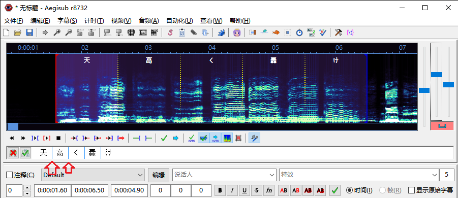
完成调整后，点击提交，可以观察到出现\k标签，这时一行卡拉OK计时完成，接下来就是跳转到下一行重复以上工作。
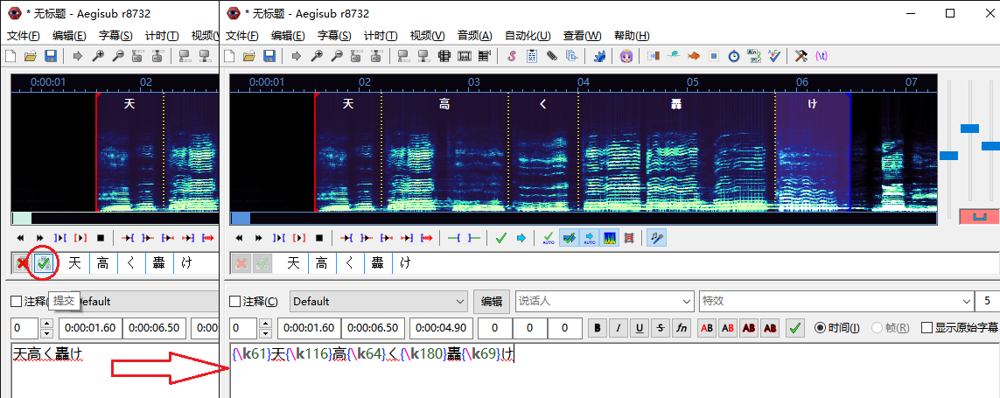
音频计时并不是个困难的工作，但它较为机械。这里提供几种小技巧，来加速这个工作。
热键: 键盘上有许多热键可以帮助你提升速度。
最重要的热键有:
播放 开始/结束 附近: 有四个按键(Q, W, E , D) 可以播放当前段音频的前后500ms，四个按键分别对应"开始前500ms"、"结束后500ms"、"开始后500ms"、"结束前500ms"。 有助于快速判断和检查开始结束时间。
在播放时改变时间: 当音频播放时，你可以改变开始时间，它不会影响音频的继续播放。而当你改变结束时间时，音频的播放会立即停止。
举个例子，当你寻找第一行的开始时间时，你可以放心大胆地延长默认的 5s 行持续时间，直到你需要的时间点都落在这个区间里。然后播放音频，当播放到你需要的开始时间点，在音频图上对应位置单击鼠标左键，这时音频会继续播放，等到你需要的结束时间点时，单击鼠标右键，音频停止，同时这条轴也完成了。你也可以选择用热键进行检查(QWED)
音频图的理解和利用: 频谱模式: 具有波形模式不具有的优势，它能反映频率、振幅(音量)随时间的变化 想要利用频谱的优势，首先要对音频有一定的熟悉，对频谱有一定的了解: 频谱的亮度表示的是音频的音量，高度表示的是音频的频率。一般情况下摩擦音会产生较为明亮且较高的图形，如s和ts(图中红框)，可以将其作为判断音节的重要依据，节约时间 对于一些现场音频，未做后期标准化处理，音量偏低，导致波形小，频谱亮度不足，可以依靠右侧三个滑块中中间的那个来调整。 注意，首先使"凹"型按钮变红，解除音频音量(最右侧滑块)和垂直缩放(中间滑块)的同步，否则大概率会引起破音。如下图
水平缩放:依据歌曲的快慢程度和个人感受调节，音频图标尺分度值为100ms，以此为参考
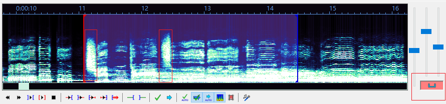
对于西文歌曲，最小单位是音节。官方推荐的方法是先分单词，后分音节，也就是在单词划分之后再次进行时间调整。相对于直接划分成音节，循序渐进，一定程度上可以提高效率。
对于日文、中文歌曲，音节单位一般为字符。
不推荐 一次性添加分隔符，每个音节的默认时间会是行持续时间/音节数目，如果不同音节长度相差较大，容易造成黄线调整空间不足，牵一发而动全身，浪费时间。
推荐 做法是，做一个音节，添加一条分隔线，为当前音节留足调整空间，节约时间
与卡拉OK样式相关的主要知识有： 主要颜色，对应标签\1c:音节演唱后的最终颜色 次要颜色，对应标签\2c:音节演唱前的临时颜色 \k标签:作为次要颜色向主要颜色过渡的标识，同时记录音节时间信息 更多有关特效标签的知识，请查看左侧"ASS特效标签"
为了预览卡拉OK效果，我们需要视频，这里使用空白预览视频。可以观察到，\k的过渡是突然的，是"瞬间"由次要颜色变为主要颜色 使用Ctrl+H，查找\k替换成\kf，可以观察到，填充方式变成了类似KTV*的平滑填充(下图)
之所以是类似KTV，是因为KTV效果多数是边框和主体颜色同时变化，ASS并未提供直接实现这个效果的标签
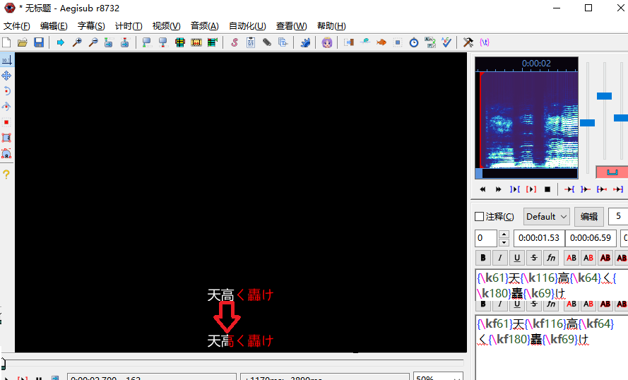
如果你已经完全掌握上面介绍的内容，你一定不会满足于简单的填充式效果 如果有兴趣继续学习，请查看卡拉OK模板部分，这部分讲述了如何制作较为复杂的卡拉OK效果